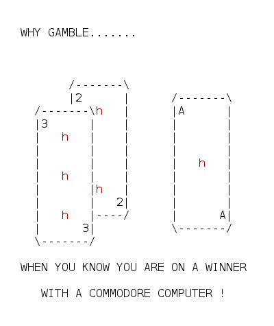
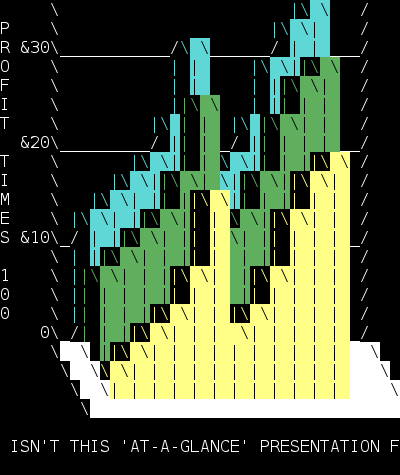
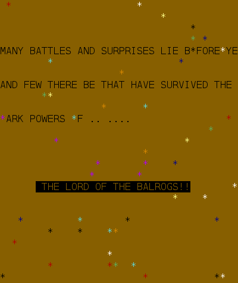
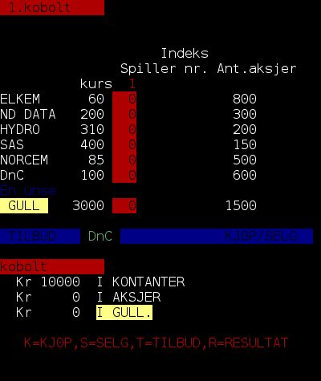
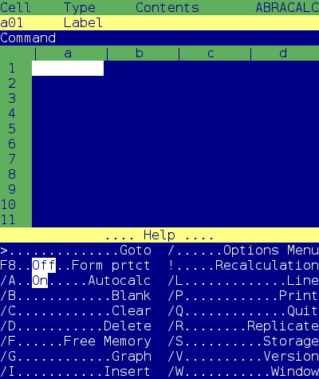
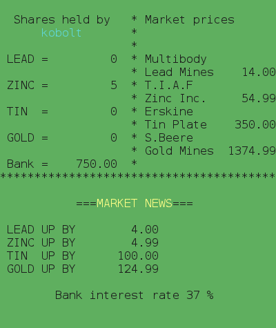

Terminal Mode Commodore 64 Emulator Update
I have performed a massive overhaul of the proof-of-concept C64 emulator I published about last year. This new version,which I have dubbed "0.2" is much more usable.
A major change in the architecture is that the old version was blocking on input from stdin, which is an interesting concept, but not feasible for more advanced usage. It is now based around curses with non-blocking stdin instead. Moving to curses means there is now a lot better support for graphics, including colors if a 256-color terminal is used. Conversion is done from PETSCII to ASCII and will work best as long as the default character sets are used. There is no sprite emulation.
Pressing Ctrl-C at any time will switch to a (non-curses) debugger. In this mode it is possible to dump memory locations and get a CPU trace. In addition there is support for setting read and write breakpoints on memory addresses which breaks back into this same debugger. In order to properly exit the emulator one must also typically enter the debugger and issue a 'q' from there to quit.
The emulator can be run at close to C64 speed (for games) or in "warp mode" where 100% CPU is used (for raw BASIC programs). I also needed to add support for the timers in the CIA since some games rely on these for random number generation. One unique feature is that getting the TOD (Time of Day) registers from the CIA will return the actual clock from the host system.
As before the emulator needs the ROMs from VICE to run, but the location of these can now be specified on the command line in case they are not at the default location.
There is no Datasette (tape) or 1541 (floppy disk) support, but C64 PRG-style programs may be loaded directly from the command line (or debugger) instead. These are injected directly into memory where they are supposed to be for the BASIC "RUN" command to work. Most BASIC programs should probably work, but machine code programs are hit-and-miss.
The new version can be downloaded here and the GitHub repository has also been updated.
Finally, some color screenshots:





